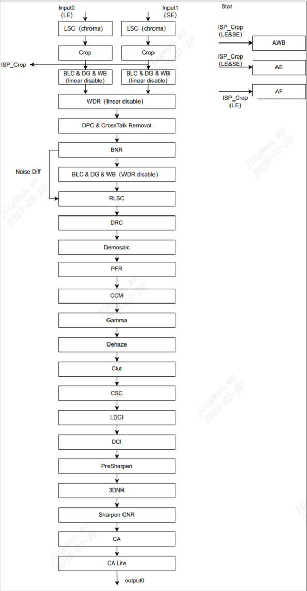

3. ISP 系统概述¶
3.1. 功能简介¶
ISP系统支持标准的图像处理功能，包括坏点校正、镜头阴影校正、自动曝光、自动白平衡、自动对焦、Demosaic等基本功能，也支持降噪、WDR和DRC等高级处理功能。
ISP主要支持的图像处理功能如下:
裁剪 (Crop)
黑电平校正 (BLC)
宽动态功能 (WDR)
静态与动态坏点校正 (DPC)
串扰去除 (CrossTalk Removal)
Bayer降噪 (BNR)
镜头阴影校正 (LSC)
动态范围压缩 (DRC)
Demosaic处理
紫边校正 (PFR)
颜色校正 (CCM)
Gamma校正
自动去雾处理 (Dehaze)
颜色三维查表增强 (CLUT)
支持局部对比度增强 (LDCI)
整体对比度增强 (DCI)
图像锐化 (Sharpen)
3D降噪 (3DNR)
色噪处理 (CNR)
自动曝光 (AE)
自动对焦 (AF)
自动白平衡 (AWB)
3A相关统计信息输出
支持亮度着色
3.2. 功能框图¶
ISP的整体结构图如 图 3.1 所示。本文档的接下来章节内容会介绍各模块的功能、模块 (BLC、LSC、AWB、CCM和CLUT) 的参数标定方法和图像质量调试方法。
{kind=link}

图 3.1 ISP整体结构图¶
3.3. 各模块简介¶
本文档的接下来章节内容会介绍各模块的功能和图像质量调试方法。ISP各模块功能简介如 表 3.1 所示。
模块名称 |
功能 |
|---|---|
Crop |
对输入图像实现裁剪的功能。 |
BLC |
黑电平校正。 |
WDR |
多帧合成的宽动态功能。 |
DPC |
实现对静态坏点和动态坏点的检测和校正功能。 |
CrossTalkRemoval |
校正Gr和Gb两个通道的不平衡现象。 |
BNR |
实现在Bayer domain的图像去噪功能。 |
LSC |
提供镜头阴影校正。 |
DRC |
调整图像的动态范围，使之能在显示设备上的显示效果与人眼视觉感受一致。 |
Demosaic |
将Bayer格式的raw图像转成RGB图像。 |
PFR |
实现图像去紫边功能，改善图像边缘的紫边现象。 |
CCM |
使用3x3矩阵来校正颜色。 |
Gamma |
根据伽马曲线调整图像整体亮度。 |
Dehaze |
针对有雾霾的场景实现去雾功能，改善图像的对比度和清晰度。 |
CLUT |
利用3D LUT实现复杂的颜色调整功能，包括亮度调整和饱和度调整等。 |
CSC |
通过3x3矩阵和矢量偏移量将RGB图像转成YUV图像。 |
LDCI |
基于对图像分块统计的方法，增强图像的局部对比度，同时可调节滤波参数，来调整局部对比度增强的局部范围。 |
DCI |
基于直方图均衡的方法来提高整体图像的对比度和暗区的细节。 |
Sharpen |
实现图像的锐化功能，增加图像清晰度。 |
3DNR |
通过时域滤波去除图像中的噪声，保持图像细节，并降低编码码率。 |
CNR |
提供图像去除色噪的功能，减少图像的色斑等现象。 |
CA |
提供饱和度调整和热成像上色功能。 |
CA_Lite |
提供饱和度调整功能。 |
AE |
提供自动曝光的信息统计给软件来调节Sensor实现自动曝光功能。 |
AWB |
提供全局与区域的统计信息给软件来调节Sensor实现自动白平衡功能。 |
AF |
该模块输出图像清晰度相关的统计信息，软件基于统计信息完成自动对焦功能。 |